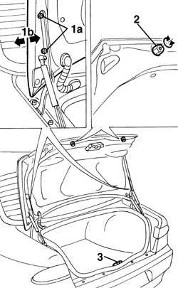
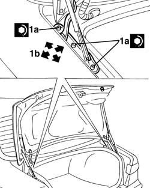

7025B10 boot lid - square
- Path
- Procedures > 70 FITTINGS > 7025 COMPARTMENT LIDS > 7025B boot lid > 7025B10 boot lid - square
- Kind
- repair procedure (removal / refitting; the operation number is the code)
- Applies to
- all engines; all production periods
- Interactive page
- https://sloeber94.github.io/elrnDB-a156/en/#/3238732
Applies to: all engines; all production periods
Lift the boot lid.
1. Loosen hinge bolts (1a) and adjust the boot lid position. Arrows (1b) indicate possible movements.
Tighten the bolt to the specified torque.
 | Fastening | Component | Ø | Value (daNm) |
|---|---|---|---|---|
- | Bolt | BOOT LID | - | 1.1 - 1.3 |
2. Adjust buffer blocks if necessary.
3. If necessary, adjust the position of the lock striker. 7025B58 boot lid lock striker - r+r

Applies to: all engines; all production periods
If the adjustments described previously are insufficient, adjust the position of the boot lid hinges as described below.
1. Remove the sealant, loosen the hinge bolts (1a) and adjust the position of the bonnet lid. Arrows (1b) indicate possible movements.
Check that the boot lid is aligned.
Tighten the bolt to the specified torque.
| Fastening | Component | Ø | Value (daNm) |
|---|---|---|---|---|
- | Bolt | BOOT LID HINGES | - | 1.1 - 1.3 |

Applies to: all engines; all production periods
Test the boot lid works properly and is correctly aligned.
Replace the sealant between hinges and body.
If necessary, touch up the paintwork in the hinge area.